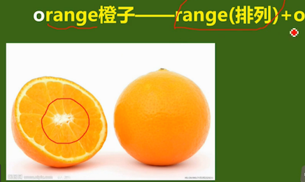

铁夫破词
词根
hum（泥土）
- human（女娲造人）
- hummock：小山岗，小土丘
- inhume（埋葬，埋藏）
- exhume（挖掘）
e表示动词后缀
exit：it作为词根时表示：走
象形
- bigwig：大人物，wig（假发）；法官，国王等带假发
- orange：橙，橘子，o + range；橙子剖开后 
- bomb：炸弹；bomber：轰炸机
- slight：轻微；small＋light
- dawn：黎明 <= down，黎：表黑暗
- bundle：捆，束；<= bind；
le表名次后缀＋小（little） 新词模仿旧词，元音部分变化
- dome：圆屋顶；将大写的D放平；home
- bow：弓，鞠躬；tow：拉拽
- climb：爬行；c + limb（四肢），两个着地的前肢和胸部组成一个扒下的C字形。
- cover：c + over
东西方熟语互译
- black sheep：害群之马
- love me, love my dog：爱屋及乌
- donkey’s year：猴年马月
- gooseflesh：鸡皮疙瘩
三个生活中常见却不曾教授的单词
- wanna = want to I wanna go = I want to go
- goona = going to I am gonna to go I am going to go
- gotta = have(got) to I gotta go I have to go
文化差异
red词义变化
- 亏损
- red ink/figure 赤字
- in the black 盈利
- 血腥，危险
- red alert 红色警戒
- red battle 血腥战争
- red flag 危险信号旗
红糖 => brown sugar
红茶 => black tea
眼红 => green-eyed
红火 => boom
英式vs美式
| file |
movie(move) |
| petrol |
gasoline |
| centre |
center |
| metre |
meter |
| cheque |
check |
file：薄膜，胶片 => movie：move
petrol: pe（石头）,trol（油) => gasoline：gas（汽），ol（oil），ine（素）
六种构词
- 相关相仿
- 复合
- 缩略
- 词根词缀
- 字母象形
- 拟声
相关相仿示例： + back pack + sting stink + break brake + wine vine
复合示例： + hi + story = history + woe + man = woman + woe + full = woeful